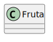
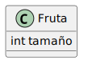
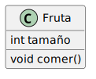
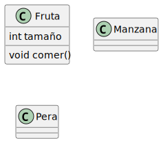
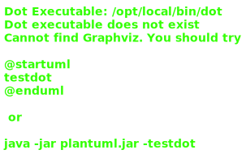
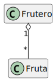
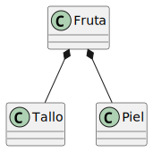
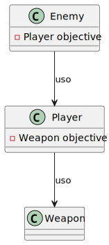

Un sistema software puede tener muchos, muchos módulos
Trabajar con todas las piezas a la vez puede ser inviable
Dividir, encapsular y ordenar las piezas es fundamental
Además, es importante recordar y comunicar la estructura software que estamos utilizando
UML (Unified Modeling Languge) es un lenguaje visual que sirve para representar un diseño software
UML se usa como el "plano" software
Todos los miembros del equipo deberían seguir este plano
Se usa para dar una visión abstracta de una arquitectura software, en particular, de arquitecturas orientadas a objetos
UML no es un lenguaje de programación, es un lenguaje de modelado
No hay un diagrama UML, hay muchos (secuencia, casos de uso, de actividades…)
Nosotros vamos a centrarnos en uno de los tipos más comunes: el diagrama de clases UML
Una clase se representa con una caja, con su nombre en la primera sección:

Figura 1: Ejemplo de clases
Las clases pueden tener atributos, que se representan en la segunda sección:

Figura 2: Atributos
También pueden representarse los métodos, en la tercera sección:

Figura 3: Métodos
La idea, en un diagrama, es que se vean representadas todas las clases relevantes:

Figura 4: Varias clases UML
Una de las relaciones más usadas en la programación orientada a objetos es la herencia
En UML, la herencia se representa con una flecha hueca, desde el hijo hasta el padre

Figura 5: Herencia
Se puede reflejar la idea de implementación de una interfaz
Una interfaz es un conjunto de funciones no implementadas que representan un comportamiento que puede ser especificado en cada clase
Figura 6: Interfaces
La agregación es un tipo de relación en la que hay un contenedor y un contenido

Figura 7: Agregación
La composición es más "fuerte" que la agregación
En la composición, el todo y las partes tienen el mismo ciclo de vida
Es decir, no hay todo sin las partes

Figura 8: Composición
Es una relación estructural que describe una conexión entre objetos de esas clases

Figura 9: Asociación
UML es mucho, mucho más complejo, y se puede usar para representar mucho más que una estructura de clases
Hay muchos recursos en Internet a través de los cuales podéis aprender más detalles
También os recomendamos que useis aplicaciones que facilitan el desarrollo de los diagramas UML: